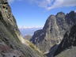
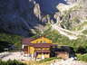
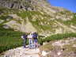
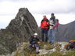

<!--
    *  ---------------------------------------------------------------------------------------------------------------------------  *
    *  -----  18-droppable-photo-manager-demo.html  --  /src/pages-components/clase-28/18-droppable-photo-manager-demo.html  -----  *
    *  ---------------------------------------------------------------------------------------------------------------------------  *
-->


<div class="main__demo">

    <div class="photos">

        <h3 class="photos__title">Gestor de fotos</h3>

        <p class="photos__hint">Puedes borrar una foto arrastrándola a la papelera o con su icono. Vuelve a la galería si la arrastras de vuelta o con el icono de recuperar.</p>

        <div class="photos__stage">
                    <div class="photos__board">
                        <ul id="gallery" class="photos__list ui-helper-reset">
                    <li class="photos__item ui-widget-content ui-corner-tr">
                        <h5 class="photos__caption ui-widget-header">Altos Tatras</h5>
                        
                        <button type="button" class="photos__icon ui-icon ui-icon-zoomin" data-src="assets/img/clase-28/gestor-fotos/high_tatras.jpg" data-titulo="Las cumbres de los Altos Tatras">Ampliar</button>
                        <button type="button" class="photos__icon ui-icon ui-icon-trash">Eliminar imagen</button>
                    </li>
                    <li class="photos__item ui-widget-content ui-corner-tr">
                        <h5 class="photos__caption ui-widget-header">Altos Tatras 2</h5>
                        
                        <button type="button" class="photos__icon ui-icon ui-icon-zoomin" data-src="assets/img/clase-28/gestor-fotos/high_tatras2.jpg" data-titulo="El refugio junto al lago de montaña">Ampliar</button>
                        <button type="button" class="photos__icon ui-icon ui-icon-trash">Eliminar imagen</button>
                    </li>
                    <li class="photos__item ui-widget-content ui-corner-tr">
                        <h5 class="photos__caption ui-widget-header">Altos Tatras 3</h5>
                        
                        <button type="button" class="photos__icon ui-icon ui-icon-zoomin" data-src="assets/img/clase-28/gestor-fotos/high_tatras3.jpg" data-titulo="Preparando la ascensión">Ampliar</button>
                        <button type="button" class="photos__icon ui-icon ui-icon-trash">Eliminar imagen</button>
                    </li>
                    <li class="photos__item ui-widget-content ui-corner-tr">
                        <h5 class="photos__caption ui-widget-header">Altos Tatras 4</h5>
                        
                        <button type="button" class="photos__icon ui-icon ui-icon-zoomin" data-src="assets/img/clase-28/gestor-fotos/high_tatras4.jpg" data-titulo="En la cima de Kozi kopka">Ampliar</button>
                        <button type="button" class="photos__icon ui-icon ui-icon-trash">Eliminar imagen</button>
                    </li>
                        </ul>
                        <div id="trash" class="photos__trash ui-widget-content ui-state-default">
                            <h4 class="photos__trash-title ui-widget-header"><span class="ui-icon ui-icon-trash" aria-hidden="true"></span>Papelera</h4>
                        </div>
                    </div>
        </div>

        <div class="photos__note">
            <p class="photos__note-text">Sacar una foto de la galería y ampliar otra en el diálogo.</p>
        </div>

    </div>

</div>
